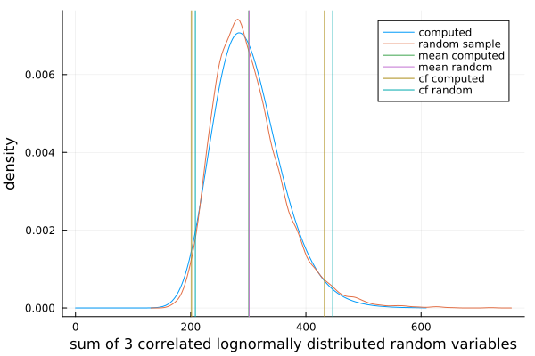

Sum and mean of correlated lognormal random variables
Method sum for a DistributionVector{<:LogNormal} computes approximation of the distribution of the sum of the corresponding lognormal variables.
See documentation of the sum function.
In the following example the computed approximation is compared to a bootstrap sample of sums over three correlated random variables.
using Distributions,DistributionVectors
mu = log.([110,100,80])
sigma = log.([1.2,1.5,1.1])
acf0 = AutoCorrelationFunction([1,0.4,0.1])
dv = SimpleDistributionVector(LogNormal{eltype(mu)}, mu, sigma);
dsum = sum(dv, acf0)Distributions.LogNormal{Float64}(μ=5.687397938575497, σ=0.19475605843437613)